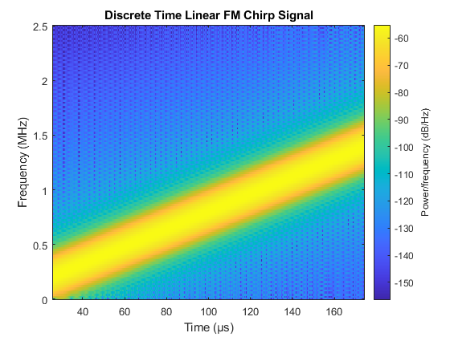
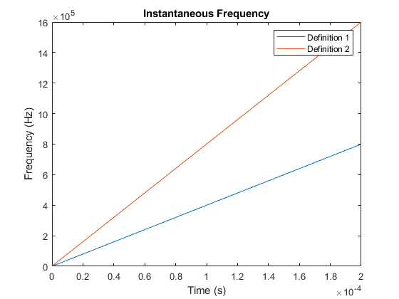
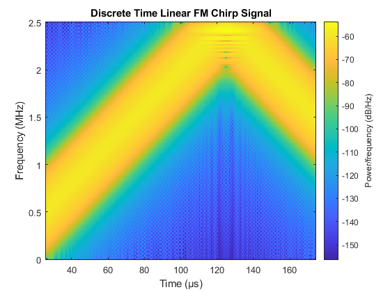
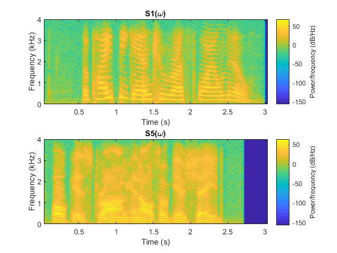
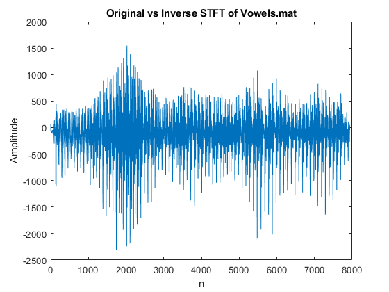

Contents
clear;
clc;
close all;
load ('s1.mat');
load ('s5.mat');
load ('vowels.mat');
Frequency Modulated Signals
fs = 5 * 10^6;
mu = 4 * 10^9;
totalT = 200 * 10^-6;
points = 256;
t = linspace(0, totalT, 1000);
x = cos(2*pi*mu*t.^2);
spectrogram(x, triang(256), 255, 256, fs, 'yaxis');
title("Discrete Time Linear FM Chirp Signal");
phi = 2*pi*mu*t.^2;
freq = cos(phi);
inst_freq1 = mu*t;
inst_freq2 = 1./(2*pi)*diff(phi)/(t(2)-t(1));
figure;
plot(t,inst_freq1,t(1:end-1), inst_freq2);
xlabel('Time (s)');
ylabel('Frequency (Hz)');
title('Instantaneous Frequency');
legend('Definition 1', 'Definition 2');
mu = 1.0 * 10^10;
x = cos(2*pi*mu*t.^2);
figure;
spectrogram(x, triang(256), 255, 256, fs, 'yaxis');
title("Discrete Time Linear FM Chirp Signal");
fs = 8*10^3;
figure;
subplot(2, 1, 1);
spectrogram(s1, triang(1024), 1023, 1024, fs, 'yaxis');
title('S1(\omega)');
subplot(2, 1, 2);
spectrogram(s5, triang(1024), 1023, 1024, fs, 'yaxis');
title('S5(\omega)');
figure;
subplot(2, 1, 1);
spectrogram(s1, triang(512), 511, 512, fs, 'yaxis');
title('S1(\omega)');
subplot(2, 1, 2);
spectrogram(s5, triang(512), 511, 512, fs, 'yaxis');
title('S5(\omega)');
y = spectrogram(vowels, rectwin(256), 128, 1024, fs, 'yaxis');
y = [y; flipud(y)];
output = invSTFT(y, 1024);
figure;
plot(vowels(1:size(output,1))-output);
title('Original vs Inverse STFT of Vowels.mat');
xlabel('n');
ylabel('Amplitude');
y = spectrogram(vowels, rectwin(256), 128, 1024, fs, 'yaxis');
y = y(:, (1:2:end));
y = [y;flipud(y)];
output = invSTFT(y, 1024);
function output = invSTFT(signal, n)
temp = real(ifft(signal));
len = size(temp, 2);
output = zeros(n, len);
temp = temp( 1:256, : );
currentIndex=1;
for i = 1:len
output(currentIndex:currentIndex+255, i) = temp( :,i);
currentIndex = currentIndex + 128;
end
output = sum(output, 2);
output(129:length(output) - 128) = output(129:length(output) - 128) / 2;
end
  

 